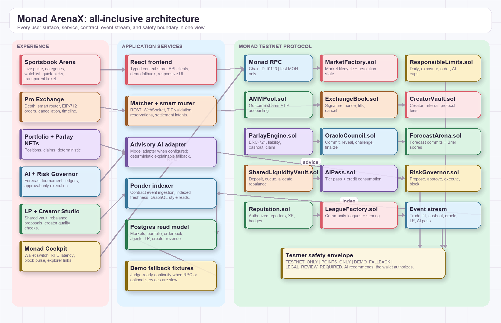
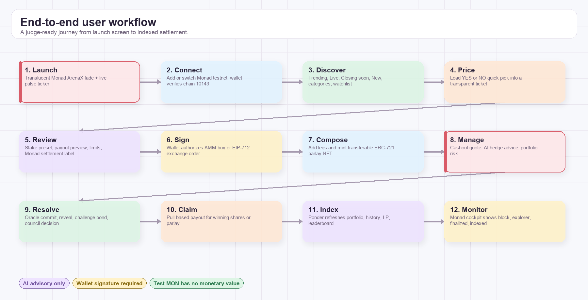
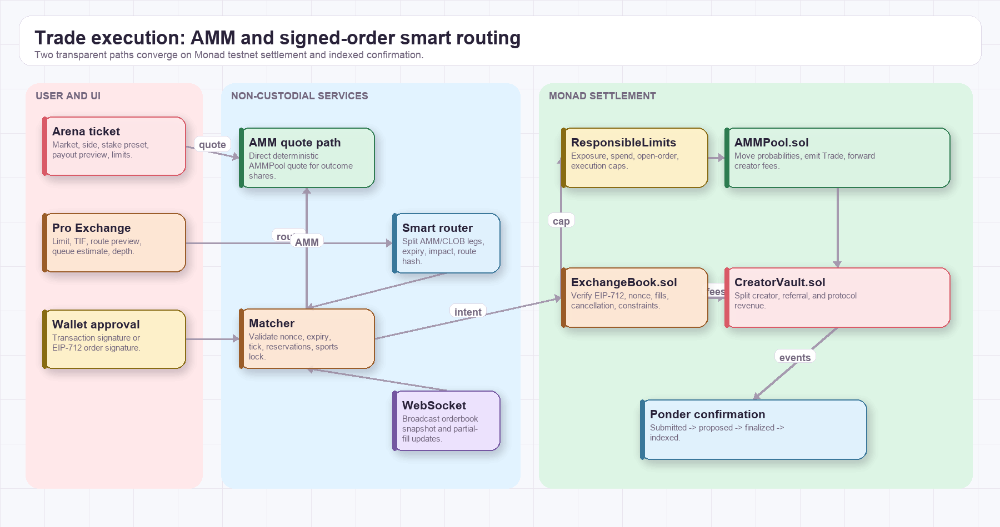
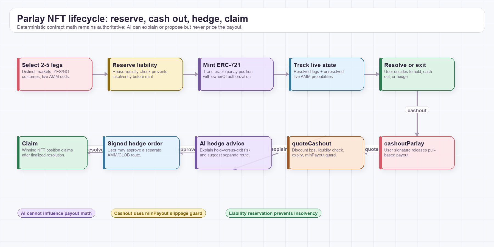
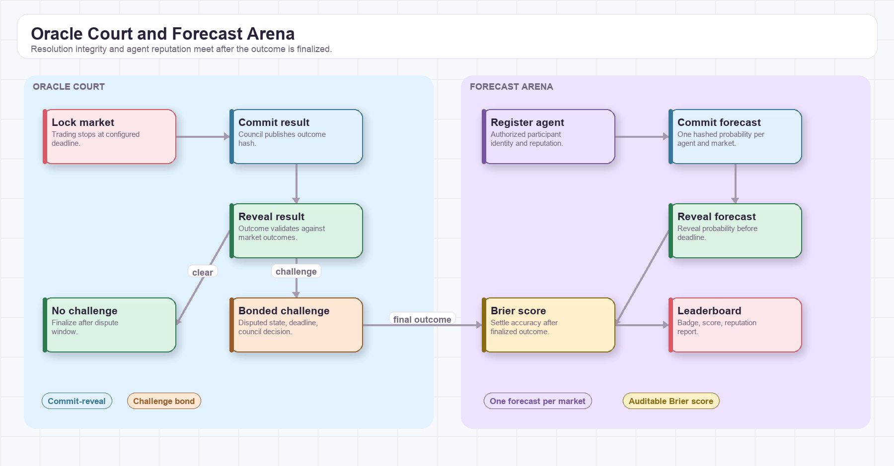
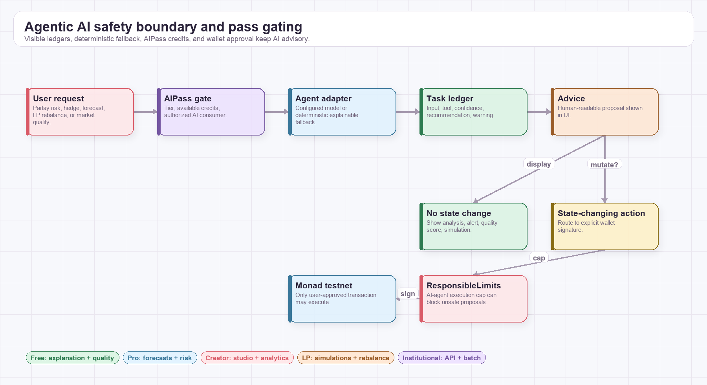
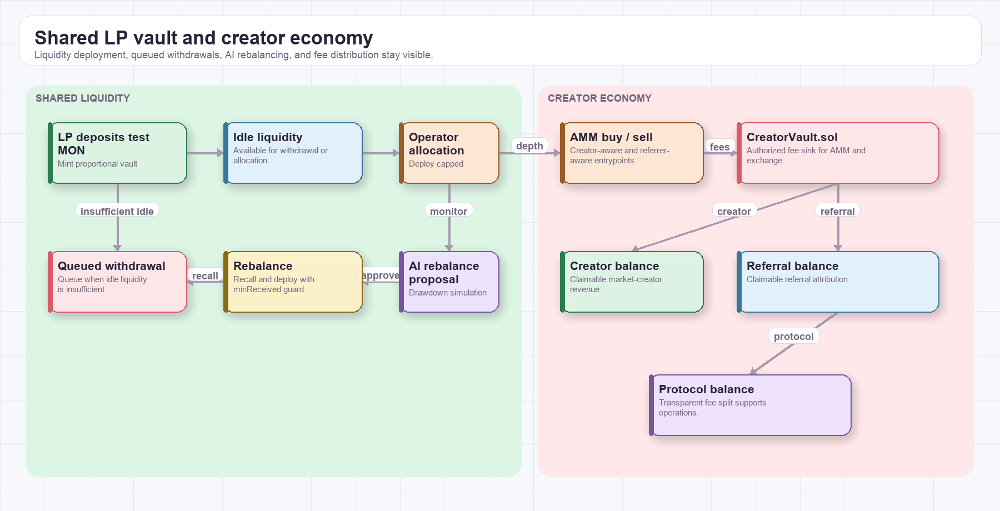
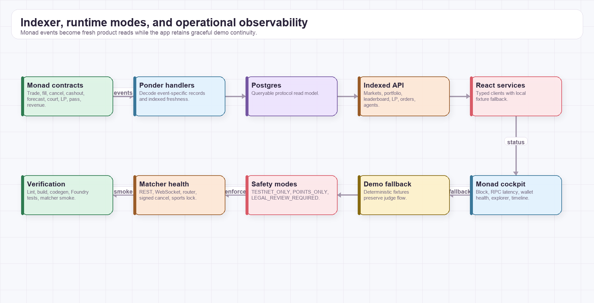

01
All-inclusive system map
Experience, services, Monad contracts, events, safety, and fallback.

One inclusive protocol map plus focused visual workflows for the full Monad-first prediction exchange: discovery, trading, signed orders, parlay NFTs, Oracle Court, Forecast Arena, agentic AI, shared liquidity, creator revenue, indexing, runtime modes, and verification.
Monad testnet contracts
Product and operations
Indexed read model
Testnet-first guardrails
Experience, services, Monad contracts, events, safety, and fallback.

From branded launch to indexed settlement.

Transparent execution and non-custodial settlement.

Liability reserve, cashout, hedge, and claim.

Bonded dispute resolution and Brier-score reputation.

AIPass gating, visible ledgers, and wallet approval.

Shared liquidity, rebalancing, and transparent fee splits.

Ponder reads, runtime modes, cockpit, and verification.

Every implemented product domain is represented in the diagrams and linked back to its Monad-native protocol surface.